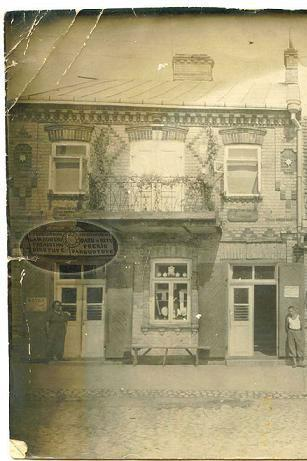
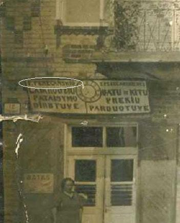
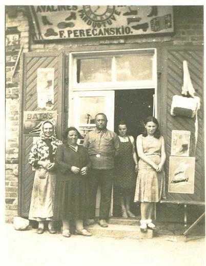
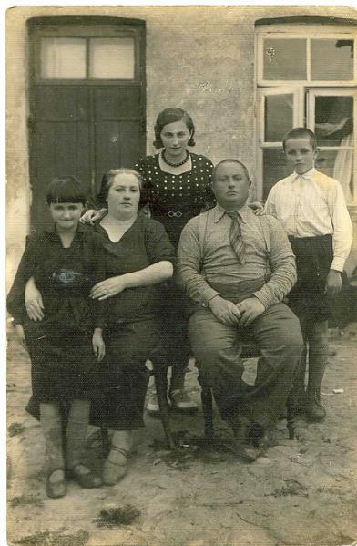

The family name Porzecanski was spelled “Perecanski” in Simnas, as can be seen in two different signs posted above the entrance to Fivel Perecanski’s store, and it was pronounced “Perechanski” in Yiddish and “Perechanskis” in Lithuanian. (The letter “O” after “F.Perecanski” is a Lithuanian suffix used to refer to the head of a family, and it is pronounced “s.”) However, Perecanski is a Slavic rather than Lithuanian name, and indeed the oral history is that the family came to Simnas at some point in the 19
th century from another
shtetl located further east or southeast, variously identified as Perechan or Buzkun. (There is a town named Paracany in next-door Belarus.) The first picture is one that appears in a previous section, with the area of interest darkened. Next to it appears a close-up of this area, showing Rivka Perecanski – Lea Elhanani’s mother – below a sign to the family store around 1931.
 
The family name is quite readable in this new sign above Feivel Perecanski’s store, in a picture taken around 1933. Standing at the door are, from left to right, Sheine Michle (Perecanski) Rabinowich – Anne and Gloria Berman’s grandmother; Chana Perecanski – Berchik’s second wife; Feivel Perecanski – Lea Elhanani’s father; Chana’s daughter Feige Lea; and Lea (Perecanski) Elhanani. All but Sheine and Lea, both of whom emigrated to what was then Palestine, would perish in Simnas in 1941.

This picture, from the mid-1930s, shows Lea (Perecanski) Elhanani’s family: Lea is standing in the middle and, from left to right in the front row, are her sister Tamara, mother Rivka, father Feivel and brother Josef. All but Lea were victims of the Nazi-supervised killing of Jews from Simnas in September 1941.

Back to the Simnas Section
Pictures of Lithuania
Back to the trip homepage